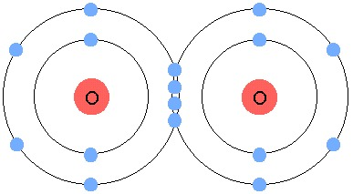

Periodic Table - Oxygen - 8th

Oxygen eighth element of the Periodic Table
Oxygen (from the Greek “oxis”, acid and “genes”, producer) is a colorless, odorless and tasteless gas (ie colorless, odorless and tasteless), poorly soluble in water, making present in nature in the form of three stable isotopes: oxygen 16 (present in 99.75% of occurrences in the environment); oxygen 17 (0.37% of occurrences) and oxygen 18 (0.20% of occurrences). It is a little water soluble element, and at room temperature, its molecule is inert; However, in the presence of catalytic substances or when receiving heat, it reacts with most of the chemical elements, resulting in several compounds.
In low atmosphere (ie, altitudes near the earth's surface), oxygen is abundant in its diatomic form (meaning that oxygen is found in nature commonly in the form of two isotopes of the same combined type), represented by the formula O2. It is known to be essential for maintaining the life of the vast majority of living organisms on the planet. Its density is slightly higher than that of air because its atoms are very small in size. These atoms have eight electrons, negatively charged elementary particles that form their structure. Because it is too electronegative, the element has a high propensity to bond to ametals (except for halogens) and metals except for gold and platinum. In forming such combinations heat comes off - combustion.
The element was first identified in 1772, thanks to chemist Joseph Priestley, through a potassium nitrate calcination experiment. It is still recognized as the most abundant element within the globe, accounting for approximately one fifth of the clean air constitution and eight ninth of the weight of water. Among the various constituents of soil, it is present in practically all (silicates and carbonates) as well as organic substances. Through its combustion, water vapor and carbon dioxide are obtained, but if it is in insufficient quantities, hydrogen burns before carbon, of which a part brightens the flame and becomes black-carbon. -smoke.
Oxygen is a chemical element of the calcogen group, or group 6A of the periodic table, having as its chemical symbol “O”, making up approximately 20% of the earth's atmosphere, being present in the composition of all living beings.
Its specific weight is 1.10 g / cm3, with a melting point of approximately -218.79 degrees Celsius, having an atomic weight of 15.99. Its atomic number is 8, giving oxygen a place among the elements called “ametals” in the periodic table of chemical elements.
Also read:
Oxygen Cycle
Chemical Oxygen Demand Oxides